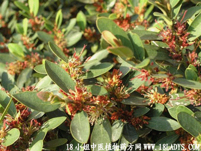

植物名：翻白叶树。
生长环境：本品为乔木，生于南方山野间。
分布：亚洲热带地区，我国南部产之。
入药部分：根。
采集期：全年。
自采地点：家种。
性味：性平、味甘淡。
功能：祛风活血、去湿、消肿。
主治、用量和用法：1、风湿痛：干用1至2两、猪脚或鸡脚适量，清水煎服；2、手脚无力酸痛：用法同上，或加酒服；3、脚气：用法同上，不必加酒。
验方：（治风湿肿痛方）半枫荷1两、千斤拔1两、豆豉羌5钱、山白芷5钱、过江龙1两、清水六碗，煎成一碗半服。
（方解）本方山白芷、豆豉姜、半枫荷行气消肿、祛风散寒以胜风湿、千斤拔、过江龙壮筋骨能通肾气。肾气既壮，血行风灭，燥胜湿除，故因于风湿而肿痛者，甚效。
（方歌）风湿脚气半枫荷，白芷豉姜江龙和，强筋壮骨千斤拔，活血祛风治无讹。
参考资料：《中国药用植物图鉴》以翻白叶树为正名，产于广东、广西。应用：浸酒可治风湿骨痛。
《临床实用中药》功效：1、善祛风湿，行气活血，凡脚气、脚肿痹痛、各种风湿痛、浸酒饮甚效，水煎内服亦可。
2、强壮筋骨，治跌打损伤。